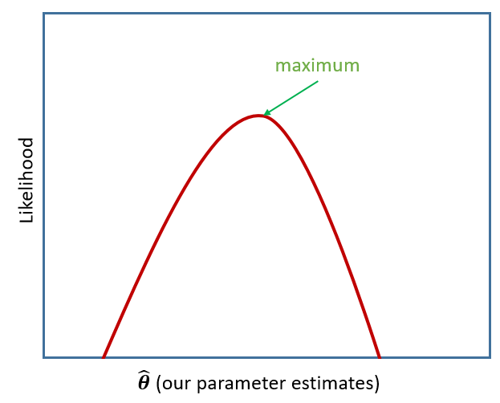
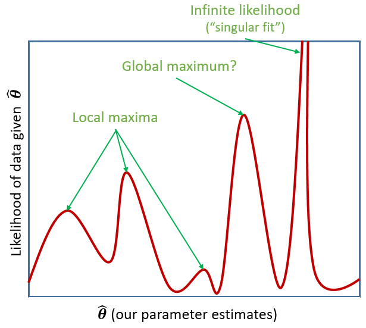
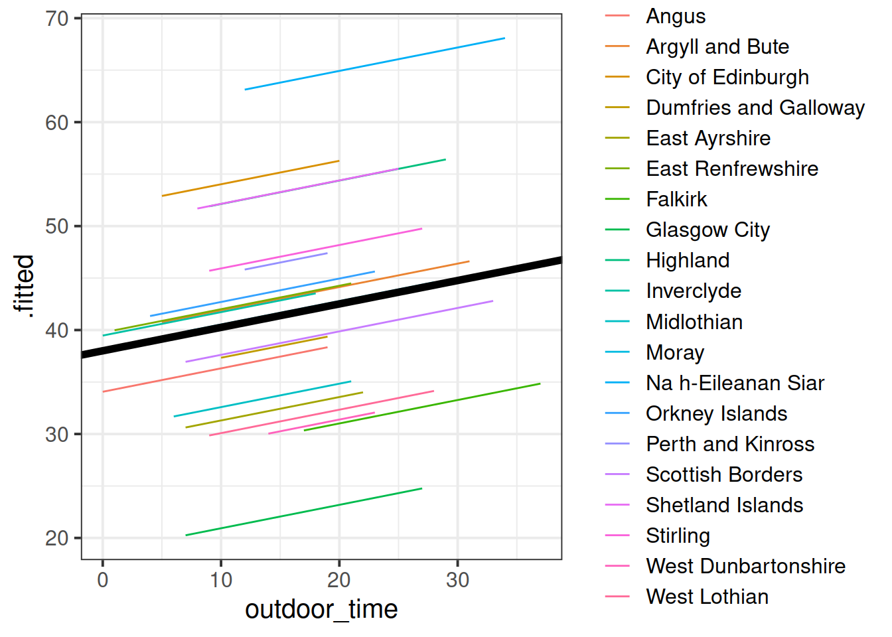
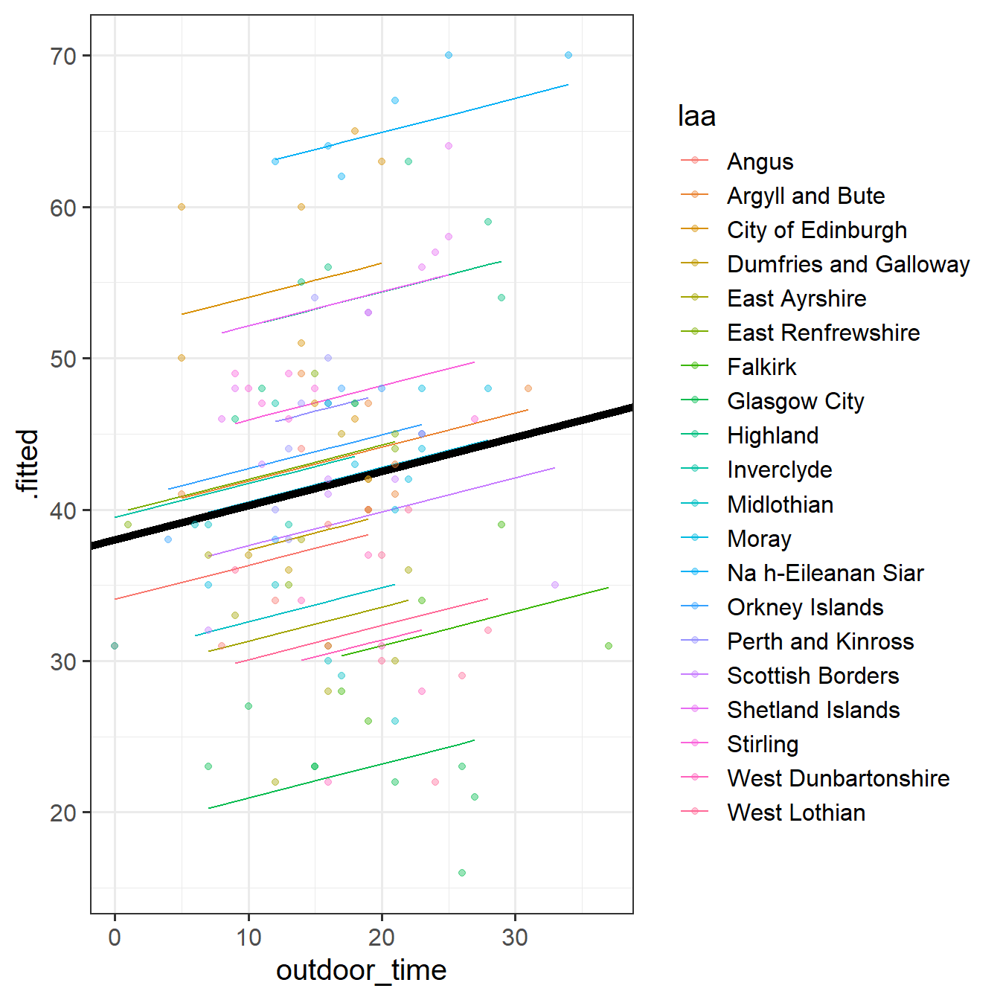
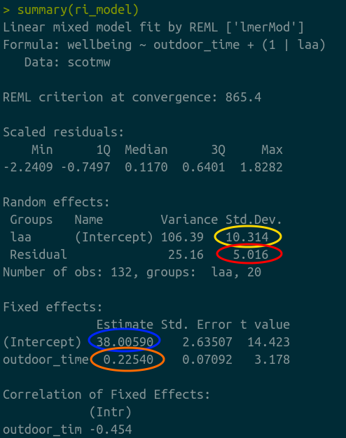
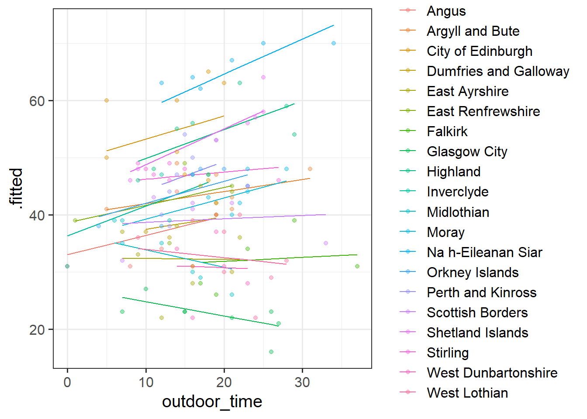
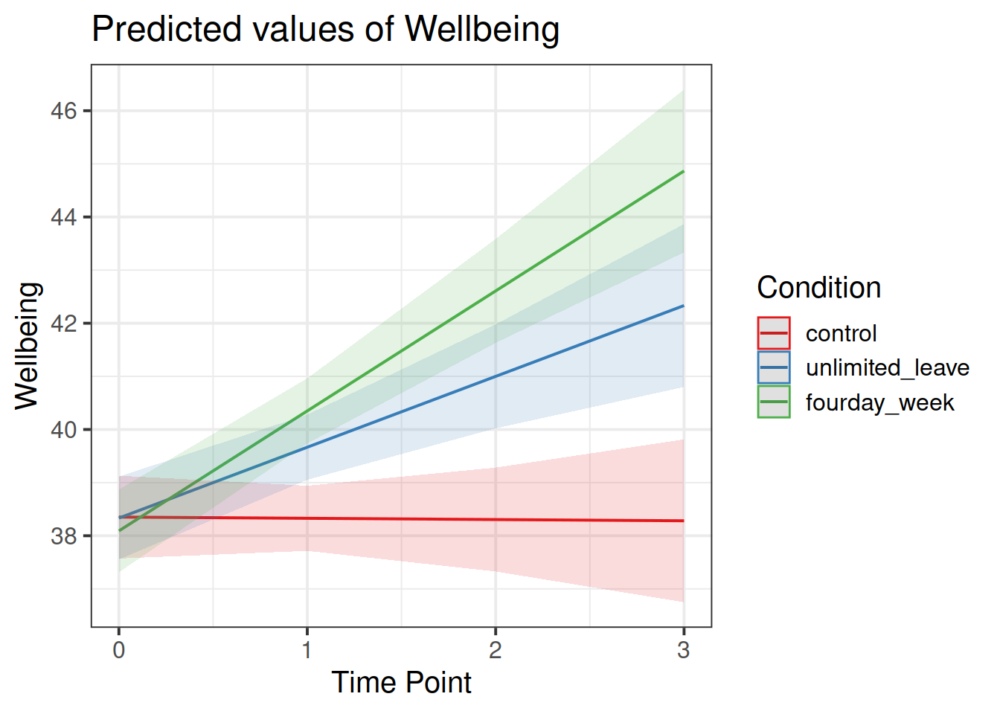

The methods we’re going to learn about in the first five weeks of this course are known by lots of different names: “multilevel models”; “hierarchical linear models”; “mixed-effect models”; “mixed models”; “nested data models”; “random coefficient models”; “random-effects models”; “random parameter models”… and so on).
What the idea boils down to is that model parameters vary at more than one level. This week, we’re going to explore what that means.
Throughout this course, we will tend to use the terms “mixed effect model”, “linear mixed model (LMM)” and “multilevel model (MLM)” interchangeably.
Introducing Multilevel Models
Multilevel Models (MLMs) (or “Linear Mixed Models” (LMMs)) take the approach of allowing the groups/clusters to vary around our \(\beta\) estimates.
In the lectures, we saw this as:
\[
\begin{align}
& \text{for observation }j\text{ in group }i \\
\quad \\
& \text{Level 1:} \\
& \color{red}{y_{ij}}\color{black} = \color{blue}{\beta_{0i} \cdot 1 + \beta_{1i} \cdot x_{ij}}\color{black} + \varepsilon_{ij} \\
& \text{Level 2:} \\
& \color{blue}{\beta_{0i}}\color{black} = \gamma_{00} + \color{orange}{\zeta_{0i}} \\
& \color{blue}{\beta_{1i}}\color{black} = \gamma_{10} + \color{orange}{\zeta_{1i}} \\
\quad \\
& \text{Where:} \\
& \gamma_{00}\text{ is the population intercept, and }\color{orange}{\zeta_{0i}}\color{black}\text{ is the deviation of group }i\text{ from }\gamma_{00} \\
& \gamma_{10}\text{ is the population slope, and }\color{orange}{\zeta_{1i}}\color{black}\text{ is the deviation of group }i\text{ from }\gamma_{10} \\
\end{align}
\]
We are now assuming \(\color{orange}{\zeta_0}\), \(\color{orange}{\zeta_1}\), and \(\varepsilon\) to be normally distributed with a mean of 0, and we denote their variances as \(\sigma_{\color{orange}{\zeta_0}}^2\), \(\sigma_{\color{orange}{\zeta_1}}^2\), \(\sigma_\varepsilon^2\) respectively.
The \(\color{orange}{\zeta}\) components also get termed the “random effects” part of the model, Hence names like “random effects model”, etc.
Optional Alternative notation
Many people use the symbol \(u\) in place of \(\zeta\).
In various resources, you are likely to see \(\alpha\) used to denote the intercept instead of \(\beta_0\).
Sometimes, you will see the levels collapsed into one equation, as it might make for more intuitive reading. This often fits with the name “mixed effects” for these models:
And then we also have the condensed matrix form of the model, in which the Z matrix represents the grouping structure, and the \(u\) (or \(\zeta\)) are the estimated random deviations.
We’re going to use the lme4 package, and specifically the functions lmer() and glmer().
“(g)lmer” here stands for “(generalised) linear mixed effects regression”.
You will have seen some use of these functions in the lectures. The broad syntax is:
lmer(formula, REML = logical, data = dataframe)
We write the first bit of our formula just the same as our old friend the normal linear model y ~ 1 + x + x2 + ..., where y is the name of our outcome variable, 1 is the intercept (which we don’t have to explicitly state as it will be included anyway) and x, x2 etc are the names of our explanatory variables.
With lme4, we now have the addition of __random effect terms)), specified in parenthesis with the | operator (the vertical line | is often found to the left of the z key on QWERTY keyboards).
We use the | operator to separate the parameters (intercept, slope etc.) on the LHS, from the grouping variable(s) on the RHS, by which we would like to model these parameters as varying.
Random Intercept
Let us suppose that we wish to model our intercept not as a fixed constant, but as varying randomly according to some grouping around a fixed center. We can such a model by allowing the intercept to vary by our grouping variable (g below):
Random Slope
By extension we can also allow the effect y~x to vary between groups, by including the x on the left hand side of | in the random effects part of the call to lmer().
Remember back to DAPR2 when we introduced logistic regression, and we briefly discussed Maximum likelihood in an explanation of how models are fitted.
The key idea of maximum likelihood estimation (MLE) is that we (well, the computer) iteratively finds the set of estimates for our model which it considers to best reproduce our observed data. Recall our simple linear regression model of how time spent outdoors (hrs per week) is associated with mental wellbeing:
There are values of \(\beta_0\) and \(\beta_1\) and \(\sigma_\varepsilon\) which maximise the probability of observing the data that we have. For linear regression, these we obtained these same values a different way, via minimising the sums of squares. And we saw that this is not possible for more complex models (e.g., logistic), which is where we turn to MLE.
To read about the subtle difference between “likelihood” and “probability”, you can find a short explanation here
If we are estimating just one single parameter (e.g. a mean), then we can imagine the process of maximum likelihood estimation in a one-dimensional world - simply finding the top of the curve:

Figure 1: MLE
However, our typical models estimate a whole bunch of parameters. The simple regression model above is already having to estimate \(\beta_0\), \(\beta_1\) and \(\sigma_\varepsilon\), and our multi-level models have far more! With lots of parameters being estimated and all interacting to influence the likelihood, our nice curved line becomes a complex surface (see Left panel of Figure 2). So what we (our computers) need to do is find the maximum, but avoid local maxima and singularities (see Figure 3).
Figure 2: MLE for a more complex model
Restricted Maximum Likelihood (REML)
When it comes to estimating multilevel models, maximum likelihood will consider the fixed effects as unknown values in its estimation of the variance components (the random effect variances). This leads to biased estimates of the variance components, specifically biasing them toward being too small, especially if \(n_\textrm{clusters} - n_\textrm{level 2 predictors} - 1 < 50\). Restricted Maximum Likelihood (REML), however, separates the estimation of fixed and random parts of the model, leading to unbiased estimates of the variance components.
lmer() models are by default fitted with REML. This is better for small samples.
Model Comparisons in MLM
When we compare models that differ in their fixed effects via comparing model deviance (e.g. the likelihood ratio), REML should not be used as only the variance components are included in the likelihood. Functions like anova() will automatically refit your models with ML for you, but it is worth checking.
We cannot compare (either with ML or REML) models that differ in both the fixed and random parts.
Model Convergence
For large datasets and/or complex models (lots of random-effects terms), it is quite common to get a convergence warning. There are lots of different ways to deal with these (to try to rule out hypotheses about what is causing them).
For now, if lmer() gives you convergence errors, you could try changing the optimizer. Bobyqa is a good one: add control = lmerControl(optimizer = "bobyqa") when you run your model.
lmer(y ~1+ x1 + ... + (1+ .... | g), data = df, control =lmerControl(optimizer ="bobyqa"))
What is a convergence warning??
There are different techniques for maximum likelihood estimation, which we apply by using different ‘optimisers’. Technical problems to do with model convergence and ‘singular fit’ come into play when the optimiser we are using either can’t find a suitable maximum, or gets stuck in a singularity (think of it like a black hole of likelihood, which signifies that there is not enough variation in our data to construct such a complex model).

Figure 3: local/global maxima and singularities
Exercises: Intro MLM
Cross-Sectional: Wellbeing Across Scotland
Recall our dataset from last week, in which we used linear regression to determine how outdoor time (hours per week) is associated with wellbeing in different local authority areas (LAAs) of Scotland. We have data from various LAAs, from Glasgow City, to the Highlands.
Self report estimated number of hours per week spent outdoors
wellbeing
Warwick-Edinburgh Mental Wellbeing Scale (WEMWBS), a self-report measure of mental health and well-being. The scale is scored by summing responses to each item, with items answered on a 1 to 5 Likert scale. The minimum scale score is 14 and the maximum is 70.
density
LAA Population Density (people per square km)
Question 1
Using lmer() from the lme4 package, fit a model predict wellbeing from outdoor_time, with by-LAA random intercepts.
Pass the model to summary() to see the output.
Solution
library(lme4)ri_model <-lmer(wellbeing ~ outdoor_time + (1| laa), data = scotmw)summary(ri_model)
Linear mixed model fit by REML ['lmerMod']
Formula: wellbeing ~ outdoor_time + (1 | laa)
Data: scotmw
REML criterion at convergence: 866.6
Scaled residuals:
Min 1Q Median 3Q Max
-2.2218 -0.7192 0.1217 0.6395 1.8287
Random effects:
Groups Name Variance Std.Dev.
laa (Intercept) 106.23 10.307
Residual 25.46 5.046
Number of obs: 132, groups: laa, 20
Fixed effects:
Estimate Std. Error t value
(Intercept) 38.18979 2.64778 14.42
outdoor_time 0.21349 0.07236 2.95
Correlation of Fixed Effects:
(Intr)
outdoor_tim -0.463
Question 2
Sometimes the easiest way to start understanding your model is to visualise it.
Load the package broom.mixed. Along with some handy functions tidy() and glance() which give us the information we see in summary(), there is a handy function called augment() which returns us the data in the model plus the fitted values, residuals, hat values, Cook’s D etc..
ri_model <-lmer(wellbeing ~ outdoor_time + (1| laa), data = scotmw)library(broom.mixed)augment(ri_model)
Add to the code below to plot the model fitted values, and color them according to LAA. (you will need to edit ri_model to be whatever name you assigned to your model).
augment(ri_model) %>%ggplot(aes(x = outdoor_time, y = ......
Solution
augment(ri_model) %>%ggplot(aes(x = outdoor_time, y = .fitted, col = laa)) +geom_line()
For our estimates of \(\gamma_{00}\) (the fixed value around which LAA intercepts vary) and \(\beta_1\) (the fixed estimate of the relationship between wellbeing and outdoor time), we can use fixef().
fixef(ri_model)
(Intercept) outdoor_time
38.189795 0.213492
Can you add to the plot in the previous question, a thick black line with the intercept and slope given by fixef()?
Hint:geom_abline()
Solution
augment(ri_model) %>%ggplot(aes(x = outdoor_time, y = .fitted, col = laa)) +geom_line() +geom_abline(intercept =fixef(ri_model)[1], slope =fixef(ri_model)[2], lwd =2)

Question 4
By now, you should have a plot which looks more or less like the left-hand figure below (we have added on the raw data - the points).

Figure 4: Model fitted values

Figure 5: Summary model output lmer(wellbeing~1 + outdoor_time + (1|laa), data = scotmw)
We’re going to map the parts of the plot in Figure 4 to the summary() output of the model in Figure 5. Match the coloured sections Red, Orange, Yellow and Blue in Figure 5 to the descriptions below of Figure 4 A through D.
where the black line cuts the y axis
the standard deviation of the distances from all the individual LAA lines to the black line
the slope of the black line
the standard deviation of the distances from all the individual observations to the line for the LAA to which it belongs.
Can you also match those same coloured sections in Figure 5 to the mathematical terms in the model equation:
Yellow = B = \(\sigma_{\color{orange}{\zeta_{0}}}\)
Red = D = \(\sigma_{\varepsilon}\)
Blue = A = \(\gamma_{00}\)
Orange = C = \(\beta_{1}\)
Question 5
Fit a model which allows also (along with the intercept) the effect of outdoor_time to vary by-LAA.
Then, using augment() again, plot the model fitted values. What do you think you will see?
Does it look like this model better represents the individual LAAs? Take a look at, for instance, Glasgow City.
Solution
rs_model <-lmer(wellbeing ~1+ outdoor_time + (1+ outdoor_time | laa), data = scotmw)augment(rs_model) %>%ggplot(aes(x = outdoor_time, y = .fitted, col = laa)) +geom_line() +geom_point(aes(y=wellbeing), alpha=.4)

Longitudinal: Wellbeing Over Time
Another very crucial advantage of these methods is that we can use them to study how people change over time.
Wellbeing in Work: Longitudinal Data
The Wellbeing in Work data (wellbeingwork3) contains information on employees who were randomly assigned to one of three employment conditions:
control: No change to employment. Employees continue at 5 days a week, with standard allocated annual leave quota.
unlimited_leave : Employees were given no limit to their annual leave, but were still expected to meet required targets as specified in their job description.
fourday_week: Employees worked a 4 day week for no decrease in pay, and were still expected to meet required targets as specified in their job description.
Wellbeing was was assessed at baseline (start of maintenance), 12 months post, 24 months post, and 36 months post.
The researchers had two main questions:
Overall, did the participants’ wellbeing stay the same or did it change?
Did the employment condition groups differ in the how wellbeing changed over the assessment period?
Q: Overall, did the participants’ wellbeing stay the same or did it change?
Each of our participants have measurements at 4 assessments. We need to think about what this means for the random effects that we will include in our model (our random effect structure). Would we like our models to accommodate individuals to vary in their overall wellbeing, to vary in how they change in wellbeing over the course of the assessment period, or both?
To investigate whether wellbeing changed over the course of the assessments, or whether it stayed the same, we could fit and compare 2 models:
The “null” or “intercept-only” model.
A model with wellbeing predicted by time point.
And we can then compare them in terms of model fit. As discussed in the lecture, there are lots of ways to assess inference in multilevel models.
Our sample size here (180 participants, each with 4 observations) is reasonably large given the relative simplicity of our model. We might consider running a straightforward Likelihood Ratio Test using anova(restricted_model, full_model) to compare our two models.
Remember, we shouldn’t compare models with different random effect structures.
(For now, don’t worry too much about “singular fits”. We’ll talk more about how we might deal with them next week!)
Linear mixed model fit by REML ['lmerMod']
Formula: Wellbeing ~ 1 + (1 | ID)
Data: wellbeingwork3
REML criterion at convergence: 4395.8
Scaled residuals:
Min 1Q Median 3Q Max
-2.5195 -0.6051 -0.0456 0.5895 3.5966
Random effects:
Groups Name Variance Std.Dev.
ID (Intercept) 4.82 2.195
Residual 22.48 4.741
Number of obs: 720, groups: ID, 180
Fixed effects:
Estimate Std. Error t value
(Intercept) 40.0431 0.2408 166.3
We can see the 4.82 / (4.82 + 22.48), or 0.18 of the total variance is attributable to participant-level variation.
Now lets suppose we want to compare this null model with a model with an effect of TimePoint (to assess whether there is overall change over time). Which model should we compare m.null to?
A comparison between these m.null and modA will not be assessing the influence of only the fixed effect of TimePoint.
Remember, we shouldn’t compare models with different random effect structures.
However, modB doesn’t include our by-participant random effects of timepoint, so comparing this to m.null is potentially going to mis-attribute random deviations in participants’ change to being an overall effect of timepoint.
If we want to conduct a model comparison to isolate the effect of overall change over time (a fixed effect of TimePoint), we might want to compare these two models:
The first of these models is a bit weird to think about - how can we have by-participant random deviations of TimePoint if we don’t have a fixed effect of TimePoint? That makes very little sense. What it is actually fitting is a model where there is assumed to be no overall effect of TimePoint. So the fixed effect is 0.
Q: Did the employment condition groups differ in the how wellbeing changed over the assessment period?
Hint: It helps to break it down. There are two questions here:
do groups differ overall?
do groups differ over time?
We can begin to see that we’re asking two questions about the Condition variable here: “is there an effect of Condition?” and “Is there an interaction between TimePoint and Condition?”.
Try fitting two more models which incrementally build these levels of complexity, and compare them (perhaps to one another, perhaps to models from the previous question - think about what each comparison is testing!)
We’re going to compare each model to the previous one to examine the improvement in fit due to inclusion of each parameter. We could do this quickly with
Conditions differed overall in wellbeing change \(\chi^2(2)=11.39, p = .003\)
Conditions differed in change over assessment period \(\chi^2(2)=23.71, p < .001\)
Question 8
Examine the parameter estimates and interpret them (i.e., what does each parameter represent?)
Make a graph of the model fit and the observed data.
Hints:
We can get the fixed effects using fixef(model), and we can also use tidy(model) from the broom.mixed package, and similar to lm models in DAPR2, we can pull out the bit of the summary() using summary(model)$coefficients.
There are lots of ways you can visualise the model, try a couple:
Using the effects package, does this help: as.data.frame(effect("TimePoint:Condition", model))
(Intercept) ==> Wellbeing at baseline in ‘control’ group
TimePoint ==> Slope of welleing change in ‘control’ group
Conditionunlimited_leave ==> baseline wellbeing difference from ‘unlimited_leave’ group relative to ‘control’ group
Conditionfourday_week ==> baseline wellbeing difference from ‘fourday_week’ group relative to ‘control’ group
TimePoint:Conditionunlimited_leave ==> slope of wellbeing change in ‘unlimited_leave’ group relative to ‘control’ group
TimePoint:Conditionfourday_week ==> slope of wellbeing change in ‘fourday_week’ group relative to ‘control’ group
Compared to the control group, wellbeing increased by 1.35 points/year more for employees with unlimited leave, and by 2.28 points/year for employees on the 4 day week.
To visualise the model fitted values and observed data, there are various options to choose from.
Using the effect() function (and then adding the means and SEs from the original data):
finally, sjPlot can give us the model fitted values, but it’s trickier to add on the observed means. We can add the raw data using show.data=TRUE, but that will make it a bit messier
library(sjPlot)plot_model(m.full, type="int")

Repeated Measures: Basketball/HRV
While the wellbeing example considers the groupings or ‘clusters’ of different LAAs, a more relate-able grouping in psychological research is that of several observations belonging to the same individual. One obvious benefit of this is that we can collect many more observations with fewer participants, and account for the resulting dependency of observations.
Recall the data from the previous week, from an experiment in which heart rate variability (HRV) was measured for amateur basketball players when tasked with scoring a goal with varying levels and type of potential loss/reward.
A separate group of researchers conducted a replication of this experiment with 15 participants. There were some issues with the HRV measurements resulting in some missing data, and one participant being excluded completely (meaning a slightly unbalanced design in that 8 participants were in one condition and only 7 in the other).
Size of reward (points to be won/lost on a given trial). Ranges 1 to 20
condition
Experimental Condition: Whether the participant was playing for monetary reward ('money') or for a place on the scoreboard ('kudos')
sub
Participant Identifier
throw
Whether the participant successfully completed the trial
trial_no
Trial Number (1 to 20)
hrv
Average Heart Rate Variability over the 10 seconds prior to throwing
Question 9
Recall that the research question was concerned with how the size and type of potential reward influence stress levels (as measured by heart rate variability):
How do the size and type of potential reward/loss interact to influence levels of stress?
Fit a multi-level model to examine the effects of size and type of reward on HRV, and their interaction.
Remember to think about:
what is our outcome variable of interest?
what are our predictor variables that we are interested in?
these should be in the fixed effects part.
what is the clustering?
this should be the random effects (1 | cluster) part
does size of reward (stakes) vary within clusters, or between?
if so, we might be able to fit a random slope of stakes | cluster. if not, then it doesn’t make sense to do so.
does type of reward (condition) vary within clusters, or between? - if so, we might be able to fit a random slope of condition | cluster. if not, then it doesn’t make sense to do so.
If you get an error about model convergence, consider changing the optimiser (see above)
Solution
mod <-lmer(hrv ~ stakes * condition + (1+ stakes | sub), data = bballrep,control =lmerControl(optimizer="bobyqa"))summary(mod)
Linear mixed model fit by REML ['lmerMod']
Formula: hrv ~ stakes * condition + (1 + stakes | sub)
Data: bballrep
Control: lmerControl(optimizer = "bobyqa")
REML criterion at convergence: 867
Scaled residuals:
Min 1Q Median 3Q Max
-3.6415 -0.6182 -0.0401 0.6038 2.7335
Random effects:
Groups Name Variance Std.Dev. Corr
sub (Intercept) 2.86473 1.6926
stakes 0.01661 0.1289 -0.85
Residual 0.87768 0.9368
Number of obs: 288, groups: sub, 15
Fixed effects:
Estimate Std. Error t value
(Intercept) 4.76028 0.61973 7.681
stakes 0.03215 0.04749 0.677
conditionmoney -0.24945 0.90583 -0.275
stakes:conditionmoney -0.05519 0.06944 -0.795
Correlation of Fixed Effects:
(Intr) stakes cndtnm
stakes -0.851
conditinmny -0.684 0.582
stks:cndtnm 0.582 -0.684 -0.850
We now have a model, but we don’t have any p-values, confidence intervals, or inferential criteria on which to draw conclusions.
In the longitudinal study of wellbeing over time, we did a series of model comparisons, performing tests of the incremental inclusion of additional parameters. In the Basketball/HRV example we went straight for the full model. This is in part because the two research aims of the longitudinal example can be matched two models (one for the “overall” trajectory, and one looking at differences between groups), whereas the Basketball/HRV research question simply is interested in the theorised stakes*condition interaction.
There are some options here for us to choose from for this model: we can either perform tests against the null that certain parameter estimates are equal to zero (i.e. testing that the interaction is zero), or ca wen fit a reduced model and conduct model comparisons between that and the full model (thereby isolating and testing the improvement in the model due to including the interaction term).
There are different methods of implementing these in R, as detailed in the table below. Standard likelihood ratio tests require models to be fitted with ML, and can be less reliable when samples are small (at any level). Often, approximations of the degrees of freedom are preferable, in part because these allow models to be fitted with REML. The more computationally expensive bootstrapping approach is perhaps the most recommended approach as it can provide more accurate p-values for the likelihood ratio test, as well as confidence intervals for our estimates, but for larger models it can take a lot of time to compute. Additionally, when performing the bootstrap it is important to watch out for issues with convergence in the bootstrap iterations - it may indicate your model needs simplification.
Method
Model Comparison
Parameter Estimation
Approximations to \(ddf\)
Kenward-Rogers: KRmodcomp(model2, model1) from the pbkrtest package
Satterthwaite: load the lmerTest package and re-fit your model (the summary output will then have p-values)
Likelihood Ratio Test
anova(model1, model2)
Parametric Bootstrap
PBmodcomp(model2, model1) from the pbkrtest package
confint(model, method="boot")
Question 10
This study is interested in whether the previously reported interaction between size (stakes) and type (condition) of reward on stress levels - measured by heart-rate variability (hrv) - replicates in their new sample.
Pick a method of your choosing and perform a test of/provide an interval for the relevant effect of interest.
Solution
In this case we have \(n=15\) participants (our level 2 sample size), and each participant has approximately 20 observations (but some have missingness). The sample size might be a bit small for standard likelihood ratio tests (i.e. comparing models fitted with ML rather than REML). We would be better off using models fitted with REML because they will provide more accurate estimates of the variance components (the 1+stakes|sub bit), and so better estimates of the standard errors of the fixed effects.
We’ll go through each approach here so you can see what it looks like. There’s no right answer here.
Standard LRT
If we choose a model comparison approach, we need to isolate the interaction term, because that’s what we’re interested in:
Inclusion of the interaction between size and type of reward was not found to improve model fit, as indicated by a likelihood ratio test (\(\chi^2(1) = 0.71, p = .399\)).
df approximations
If instead we choose the approximation for degrees of freedom, then generally speaking the Kenward Rogers approach is preferable as it is a little more conservative.
Inclusion of the interaction between size and type of reward was not found to improve model fit (\(F(1, 13^*) = 0.63, p = .441\)).
\(\textrm{ }^*\): denominator degrees of freedom approximated using Kenward-Rogers method.
Alternatively, we can perform the tests on the fixed effects themselves. This is more like what you will remember from DAPR2, where we get a table of effects and we can interpret each one in turn. For now we’ll just focus on the interaction term as that is the main one of interest.
Linear mixed model fit by REML. t-tests use Satterthwaite's method [
lmerModLmerTest]
Formula: hrv ~ stakes * condition + (1 + stakes | sub)
Data: bballrep
Control: lmerControl(optimizer = "bobyqa")
REML criterion at convergence: 867
Scaled residuals:
Min 1Q Median 3Q Max
-3.6415 -0.6182 -0.0401 0.6038 2.7335
Random effects:
Groups Name Variance Std.Dev. Corr
sub (Intercept) 2.86473 1.6926
stakes 0.01661 0.1289 -0.85
Residual 0.87768 0.9368
Number of obs: 288, groups: sub, 15
Fixed effects:
Estimate Std. Error df t value Pr(>|t|)
(Intercept) 4.76028 0.61973 13.08438 7.681 3.34e-06 ***
stakes 0.03215 0.04749 13.09616 0.677 0.510
conditionmoney -0.24945 0.90583 13.00709 -0.275 0.787
stakes:conditionmoney -0.05519 0.06944 13.04372 -0.795 0.441
---
Signif. codes: 0 '***' 0.001 '**' 0.01 '*' 0.05 '.' 0.1 ' ' 1
Correlation of Fixed Effects:
(Intr) stakes cndtnm
stakes -0.851
conditinmny -0.684 0.582
stks:cndtnm 0.582 -0.684 -0.850
There was no significant interaction between size and type of reward (\(\beta = -0.06, SE = 0.07, t(13.04^*) = -0.8, p = .441\)).
\(\textrm{ }^*\): denominator degrees of freedom approximated using Satterthwaite method.
parametric bootstrapping
We could instead perform the parametric bootstrap for the likelihood ratio test instead. This requires us to remove any incomplete cases from the dataset first, and then re-fit the models.
This will also (just like the standard LRT) refit the models for us with ML rather than REML (it just won’t tell us that it’s doing so!)
Inclusion of the interaction between size and type of reward was not found to improve model fit, as indicated by a parametric bootstrapped (\(k=1000\)) likelihood ratio test (\(\Delta 2loglik = 0.612, p = .469\)).
Lastly, we could also opt to construct parametric bootstrapped confidence intervals around our fixed effect estimates: